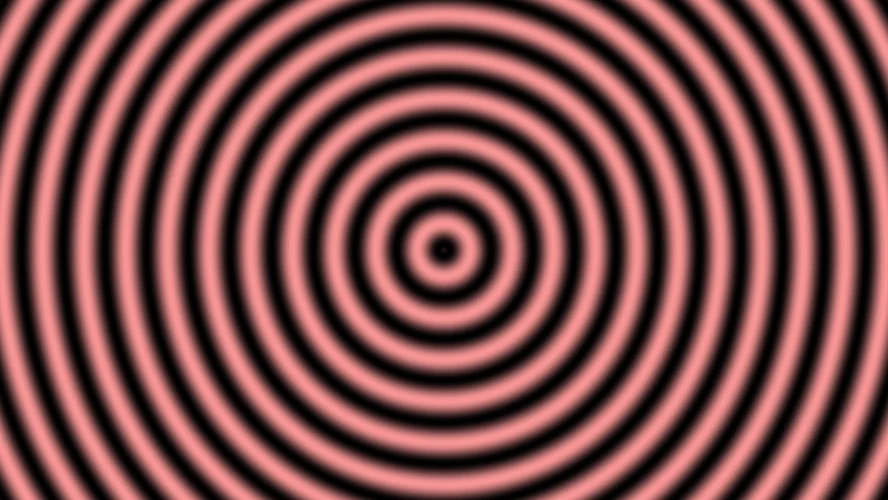
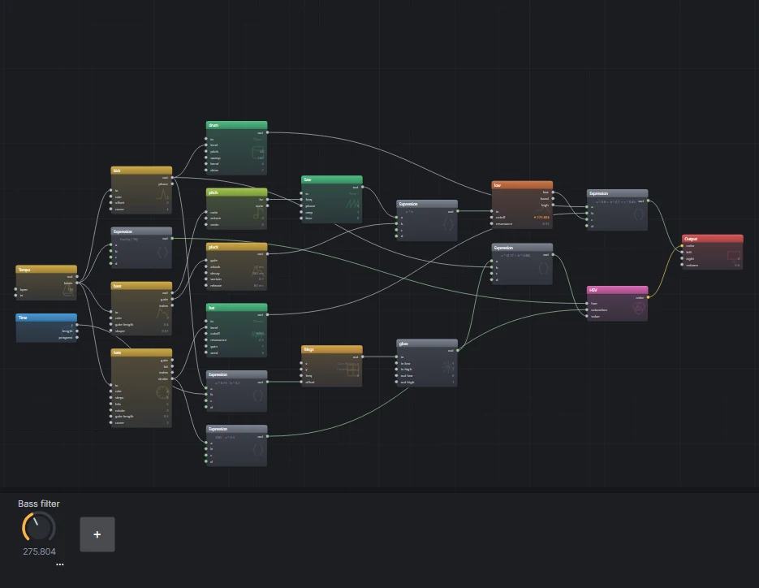

01One clock
Open Presets, choose Empty, and press F2 for the text view. Every snippet on this page goes there: type it or paste it over what is there, and press Ctrl+Enter to build it. The canvas shows what it built whenever you press F2 again.
A beat starts with a Tempo. Its beats output counts beats since the patch
started: 0 at the start, 1 one beat later, 2.5 halfway through the third. Everything rhythmic in this patch reads
that count rather than the clock in seconds, so the tempo is one knob. Turn bpm and the kick, the hat,
the bass and the picture all follow.
let beats = tempo(bpm: 118).beatsThe .beats takes that output by name; a Tempo's first output is beats per second, which is what a
sequencer's rate wants and not what this patch needs.
02A kick on every beat
Two modules from the Voice plugin make a kick. A Stroke is a drum hit without a trigger: it
jumps to 1 at the start of each stroke and falls to 0 by its end. Fed the beat count with rate: 1,
there is one stroke a beat. curve is how the fall bends: 1 is a straight line, 4 a quick fall with a
tail. A Drum turns that envelope into a kick: a sine that starts sweep hertz above
pitch and drops to it as the level falls.
let beats = tempo(bpm: 118).beats
let kick = beats |> stroke(rate: 1, curve: 4)
drum(level: kick, pitch: 48, sweep: 160, drive: 2) |> out.left
out.volume = 0.6An ADSR, a Decay and a Delay remember what happened a moment ago, and a picture has no moment ago, so they only work on the sound. A Stroke is worked out from the beat count alone. The picture can read the same kick the speakers hear, which is what step 06 does.
03Hats from a Euclid
A Euclid spreads hits as evenly as it can over steps. Five in eight
is a busy, off-balance hat that still lands on the beat. With the beat count on its in,
rate is steps a beat, so 4 makes each step a sixteenth. Its stroke output falls across
each hit step, the same shape a Stroke makes.
A Hiss is noise through a filter: high-passed at 9000 hertz, it is a closed hat. Give each
Hiss its own seed and two of them never move together.
let beats = tempo(bpm: 118).beats
let kick = beats |> stroke(rate: 1, curve: 4)
let hats = beats |> euclid(rate: 4, steps: 8, hits: 5)
let drum = drum(level: kick, pitch: 48, sweep: 160, drive: 2)
let hat = hiss(level: hats.stroke, cutoff: 9000, seed: 3)
drum * 0.8 + hat * 0.2 |> out.left
out.volume = 0.6The last line is the mixer. Arithmetic in the text is an Expression, one module computing the
whole sum, here the kick at eight tenths and the hat at two. The Output's left takes one wire, so
anything heard goes through one sum.
04A bass line
A Note Sequencer steps through the notes in its block. On the beat count with
rate: 2 it plays eighths, eight of them, so the line is one bar long. Its first output is the note
number, its gate is open for gate_length of each step, and a Note
turns the number into hertz.
let bass = beats |> notes(rate: 2, gate_length: 0.4) [ A1 A1 C2 A1 G1 A1 E2 D2 ]
let pitch = bass |> note(note: _)
let pluck = bass.gate |> adsr(gate: _, attack: 2ms, decay: 180ms, sustain: 0.2, release: 80ms)
let low = saw(freq: pitch) * pluck |> filter(cutoff: 400, resonance: 0.35)- The ADSR shapes the gate into a pluck: quick in, down to a fifth over 180 milliseconds, and gone 80 milliseconds after the gate closes. A saw straight from the gate would click on and off.
- The Filter takes the saw's buzz off. Its first output is what is under the cutoff, so
piping it on reads
low. - Add
+ low * 0.45to the sum from step 03 to hear it with the drums.
05Mix and level it
A kick, a hat and a bass line summed can go past what the speakers take. Leave headroom in the sum and set
the loudness with the Output's volume. To check how loud the patch is
as a streaming service would measure it, save it and render the sound with the command line:
flyback-cli render beat.fbks -o beat.wav --seconds 16 --loudnessIt prints the integrated loudness and the true peak. The finished patch comes out at about -14 LUFS with its peaks two decibels under the top, which is where most music sits.
06The picture
The picture reads the same signals the sound does. Rings, remapped from their -1 to 1 swing into the 0 to 1 a brightness takes, are lit by the kick: bright on the beat and down to twelve hundredths by the next one.
let glow = rings(freq: 6, offset: kick * 0.25 - t * 0.2) |> remap(-1..1, 0..1)
glow * (0.12 + kick * 0.88)
|> color.hsv(value: _, hue: fract(beats / 16), saturation: 0.85 - hats.stroke * 0.5)
|> out.color- The kick pushes the rings out a quarter of a ring on each hit, and
tdraws them slowly in. - The hue goes round the color wheel once every sixteen beats, four bars.
fractkeeps the fraction, so it wraps rather than growing. - Each hat takes some color out, so the hits flash paler: the hat is seen as well as heard.
Every flash is a kick you hear at the same moment. Nothing tells the picture where the beat is: it reads the Stroke that plays the drum, so the two cannot drift apart, not even when the tempo changes under them.


07A knob for the filter
A beat is played as much as it is written, and a filter is the thing most often played. A panel knob is declared at the top of the text, and a socket follows it by naming it where a number would go, over the range written after it:
panel tone = 0.4, label: "Bass filter"
let low = saw(freq: pitch) * pluck |> filter(cutoff: tone(150..3000), resonance: 0.35)A frequency follows a knob in decades, so the middle of the turn is a few hundred hertz rather than fifteen hundred, and the whole of the knob is useful. Press Ctrl+K for the panel under the canvas and turn it while the patch plays: nothing is rebuilt, and a recording keeps the move. To turn it from hardware, open the knob's menu and choose Learn MIDI controller.
08The whole patch
All of it together, with a description the preset gallery and the inspector show. This is the Beat you can see preset, under the ones where the picture and the sound meet, so if yours does not sound like it, open that one and compare.
description "A kick, a hat and a bass line on one tempo, and rings the kick lights up."
panel tone = 0.4, label: "Bass filter"
# One clock for everything.
let beats = tempo(bpm: 118).beats
# The drums: a kick on every beat, a hat on five sixteenths in eight.
let kick = beats |> stroke(rate: 1, curve: 4)
let hats = beats |> euclid(rate: 4, steps: 8, hits: 5)
let drum = drum(level: kick, pitch: 48, sweep: 160, drive: 2)
let hat = hiss(level: hats.stroke, cutoff: 9000, seed: 3)
# The bass: eight eighths through a filter the knob opens.
let bass = beats |> notes(rate: 2, gate_length: 0.4) [ A1 A1 C2 A1 G1 A1 E2 D2 ]
let pitch = bass |> note(note: _)
let pluck = bass.gate |> adsr(gate: _, attack: 2ms, decay: 180ms, sustain: 0.2, release: 80ms)
let low = saw(freq: pitch) * pluck |> filter(cutoff: tone(150..3000), resonance: 0.35)
drum * 0.8 + hat * 0.2 + low * 0.45 |> out.left
# The picture: rings the kick lights, a hue the bar turns, white where the hat hits.
let glow = rings(freq: 6, offset: kick * 0.25 - t * 0.2) |> remap(-1..1, 0..1)
glow * (0.12 + kick * 0.88)
|> color.hsv(value: _, hue: fract(beats / 16), saturation: 0.85 - hats.stroke * 0.5)
|> out.color
out.volume = 0.6

let names its module.09Where next
- Change
bpmand listen to everything follow. Changehitson the Euclid to 3 or 7, orrotateit by a step. - Add a snare: a second Stroke with
rate: 0.5, offset: 0.5is beats two and four, into a Hiss band-passed at 1900 hertz. The band is set on the Hiss in the inspector. - Record it with Ctrl+R, turning the knob as it plays. The recording section of the first tutorial has the formats.
- The Euclid kit preset is four Euclidean rhythms and a gliding bass, and Whole band is a whole song built the same way, a Tempo at the start of it.